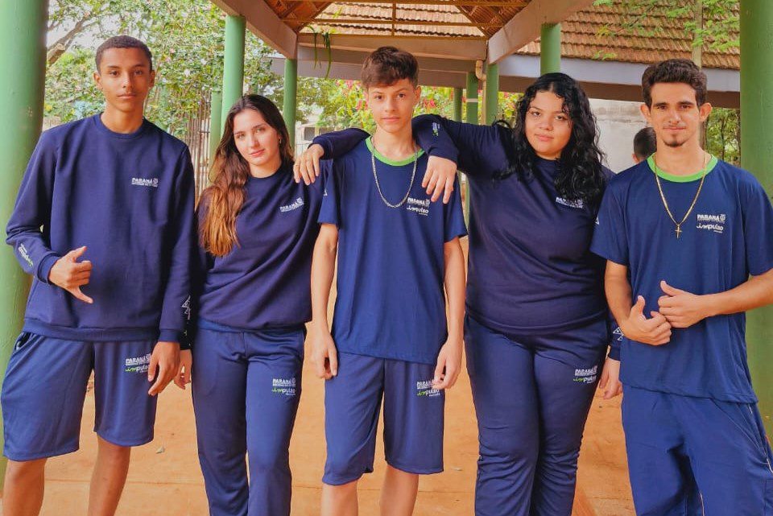

Este site revela nossas pesquisas!
Nossa pesquisa revela dados sobre a quantidade de Uniformes Escolares.
Nossa pesquisa revela dados sobre a quantidade de Uniformes Escolares.
O Governo do Paraná iniciou a entrega dos novos uniformes para as escolas com cogestão, incluindo as unidades dos Colégios Cívico-Militares. Estão sendo distribuídos a 144 mil estudantes de 195 colégios uma calça-farda, camisa-farda, jaqueta tactel e boina. Somente nesta nova etapa o investimento é de R$ 19,9 milhões. As novas peças de vestuário completam o kit do uniforme da modalidade, que teve seu primeiro conjunto (duas camisetas, abrigo e moletom) entregue no segundo semestre do ano passado, quando todas as escolas da rede já haviam retomado o ensino presencial.
Ao todo são quase 900 mil peças de vestuário entregues aos alunos e alunas em um investimento total de R$ 39,8 milhões.
Alunos dos colégios estaduais de Prudentópolis fazem atividades sobre a guerra na Ucrânia. Nesta quarta-feira (23) os kits foram entregues no NRE Curitiba e nos NREs Áreas Metropolitanas Norte e Sul. A entrega simbólica para os 14 colégios cívico-militares de Curitiba e os 13 da Área Metropolitana Sul aconteceu no auditório do Sest/Senat, no bairro do Boqueirão, em Curitiba, com diretores e representantes de estudantes de cada instituição. Já a entrega para os nove colégios de municípios da Área Metropolitana Norte ocorreu no Colégio Estadual Alfredo Chaves, em Colombo.
“Esse é mais um passo que damos na construção dessa modalidade. Esse projeto reforça valores que estão bem conectados com algumas famílias, como o respeito à cidadania, à bandeira, ao País, aos diretores e aos professores”, comentou o diretor-geral da Seed, Vinicius Neiva.
Estado faz segunda entrega de 2022 de alimentos não perecíveis da merenda escolar. Representante dos alunos durante a cerimônia na Capital, o aluno Jorge Alves, da 2ª série do ensino médio do colégio Senador Manoel Alencar Guimarães, gostou dos novos itens, chamado “de gala”, que diferem dos mais comuns já em uso. “Tenho certeza que os colégios cívico-militares são uma boa opção para a nossa geração”, disse.
Para o chefe do Núcleo Regional da Área Metropolitana Norte, Claus Marchiori, a nova entrega representa mais do que apenas novas roupas. “Hoje damos mais um passo, de muito mais identidade com a escola, em um modelo em que vocês são pioneiros”, declarou para os quase 900 estudantes da instituição.
"A entrega do novo uniforme está dentro deste contexto de melhoria das escolas e representa mais do que uma simples mudança visual..." - Roni Miranda
As unidades do Parceiro da Escola estão localizadas nas seguintes cidades:
Andirá, Cambé, Campo Magro, Curitiba, Londrina, Maringá, Cascavel, Foz do Iguaçu, Ponta Grossa, São José dos Pinhais, entre outras...
Criação de websites modernos e responsivos.
Distribuição dos kits de uniformes para os colégios cívico-militares.

Suporte técnico para empresas e usuários.